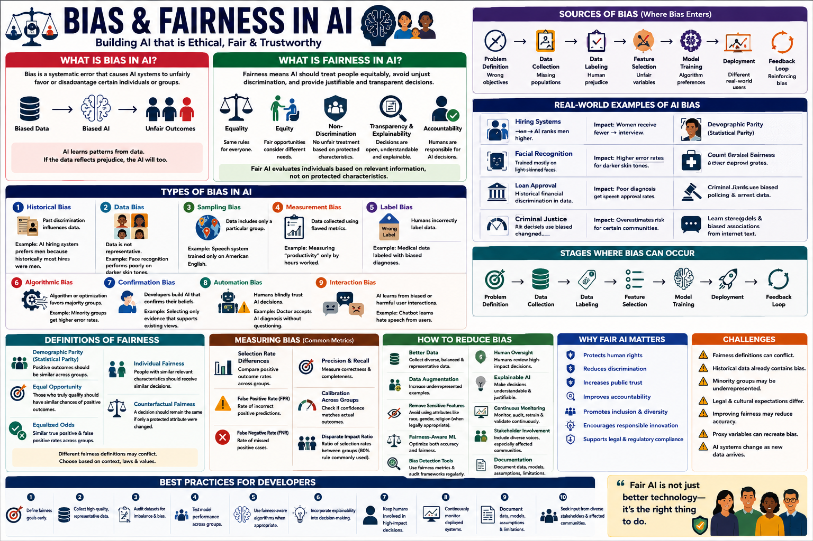

Importance of Bias and Fairness in AI
Why do bias and fairness matter in AI? Because biased algorithms already affect who gets hired, who receives loans, who is flagged by law enforcement, and what medical treatment patients receive. This guide examines the 10 most critical reasons why bias and fairness must be at the center of every AI project — with real-world case studies, measurement frameworks, and CGAI exam-focused practice questions.

Unfair outcomesUsers abandon AIFines, restrictionsEquitable, trusted📊 The causal chain: biased AI → eroded trust → regulation → the imperative for fair AI
The EU AI Act, GDPR, NYC Local Law 144, and emerging regulations worldwide mandate fairness. Non-compliance means fines up to 6% of global revenue.
Users abandon untrustworthy AI. A 2024 Pew study found 68% of users are concerned about AI bias. Trust is the currency of AI adoption.
Biased healthcare algorithms have denied care to Black patients. Biased hiring tools have systematically excluded women. The harm is not theoretical.
Companies face boycotts, PR crises, and lost revenue when biased AI makes headlines. Amazon scrapped its biased hiring tool in 2018 after public backlash.
Biased models perform worse on underrepresented groups, limiting their market and utility. Fair models generalize better.
AI can amplify existing inequalities at scale. A biased loan algorithm deployed across millions of users can systematically exclude entire communities.
Biased models produce unreliable research conclusions. In medical AI, biased training data leads to incorrect diagnoses and flawed clinical studies.
Biased generative AI can spread targeted misinformation, manipulate voters, and undermine democratic processes. Fairness is a democratic safeguard.
AI hiring and promotion tools that exhibit bias create systemic barriers to employment and career advancement for protected groups.
Without fairness, AI cannot be sustainably deployed. Ethical AI is not a constraint — it's the only viable path to long-term AI integration into society.
These documented cases demonstrate why bias and fairness in AI demand urgent attention.
You cannot fix what you cannot measure. These quantitative frameworks put fairness into practice.
Measures the gap in positive prediction rates between groups. The simplest and most widely used fairness metric.
Measures the maximum gap in TPR and FPR between groups. More nuanced than demographic parity.
Ratio of positive prediction rates: P(ŷ|minority) / P(ŷ|majority). Values below 0.8 (the "four-fifths rule") indicate potential discrimination.
Track fairness metrics over time in production. Drift detection triggers automated alerts when bias exceeds thresholds.
Practical, proven approaches to building fairer AI systems at every stage of the pipeline.
Test across all protected groups before launch. If any group has significantly worse outcomes, the model should not be deployed.
Ensure training data represents all demographic groups proportionally. Undersampling majority groups or oversampling minorities can help.
Train the model to make accurate predictions while an adversary tries to predict protected attributes. The model learns group-invariant features.
Publish standardized documentation detailing training data, evaluation metrics across groups, intended uses, and known limitations.
Complete pipeline for auditing and improving fairness in any classification model.
⬆️ Production-ready fairness pipeline: audit → evaluate → mitigate → deploy.
| # | Why Fairness Matters | Consequence of Ignoring | Action Required |
|---|---|---|---|
| ① | Legal Compliance | Fines up to 6% of global revenue | Build EU AI Act compliance program |
| ② | User Trust | 68% abandonment risk | Transparent model cards, explanations |
| ③ | Real-World Harm | Denied healthcare, jobs, loans | Pre-deployment bias audits mandatory |
| ④ | Reputation Risk | PR crises, boycotts, revenue loss | Proactive fairness testing |
| ⑤ | Model Performance | Poor accuracy on minorities | Balanced training data |
| ⑥ | Social Inequality | Amplified at scale | Feedback loop disruption |
| ⑦ | Scientific Validity | Flawed research conclusions | Diverse validation datasets |
| ⑧ | Civic Integrity | Democratic process erosion | Misinformation safeguards |
| ⑨ | Workforce Equity | Systemic employment barriers | NYC Law 144 compliance |
| ⑩ | Sustainability | AI adoption stalls | Embed fairness into AI lifecycle |
20 questions covering the importance of AI fairness, real-world case studies, regulations, and mitigation strategies.